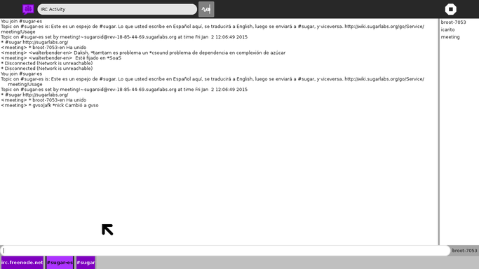

IRC¶
About¶
The IRC activity allows you to chat with other Sugar/OLPC users and enthusiasts on the Internet via Internet Relay Chat (IRC).
The activity defaults to a “channel” (akin to a “room”) called #sugar on the Freenode network, but you can join one of the many channels available by typing /join #channel, where #channel is the channel name. Like many Free/Open Source projects, Sugar developers frequent this channel, and are happy to help with any Sugar questions and suggestions you may have.
See the Internet Relay Chat page on this wiki for a list of Sugar-related channels you can join.

Where to get IRC¶
IRC activity is available for download from the Sugar Activity Library: IRC
The source code is available on GitHub.
Using IRC¶
IRC Commands¶
The following commands can be typed into the input box, all preceded by a slash (/):
/join #channel- join a channel/server irc.example.org- connect to a different network/query user- open up a private chat window with another user/msg user message- privately message another user without opening a new window/nick new_name- change your nickname away from the default
Many other commands are available, and you can create and administer your own channels as well: see the IRC Help for more information.
Where to report problems¶
Please report bugs and make feature requests at irc-activity/issues.